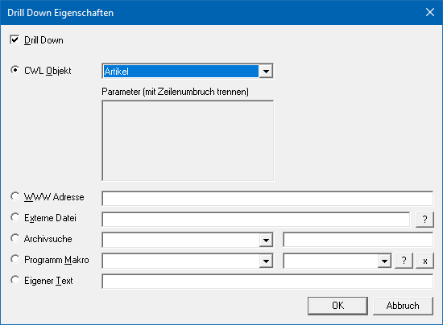
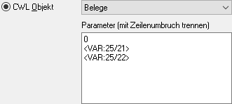
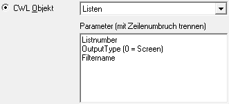
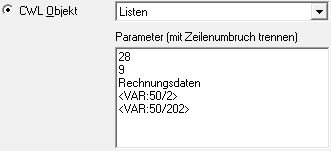
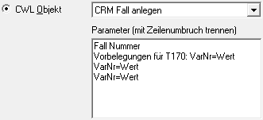
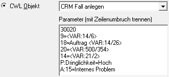
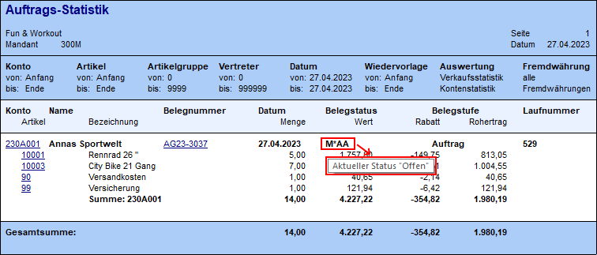

Ø DrillDown
Mit Hilfe einer Drill Down-Eigenschaft kann zu einer Variable eine Verknüpfungsfunktion zu einer weiterführenden Aktion definiert werden. Die DrillDown-Variable wird hierbei im Anschluss farblich gesondert dargestellt und unterstrichen.
Eigenschaftsfenster "Drill Down Eigenschaften"
Über das Eigenschaftsfenster "Drill Down Eigenschaften" kann die Art des DrillDowns definiert werden.

Grundsätzlich können folgende Funktionen von der WinLine angesprochen werden:
Ø CWL Objekt
Aus der Auswahlbox kann gewählt werden, welches Objekt mit der Variable angesprochen werden soll. D.h. der Inhalt der Variable wird z.B. als Personenkonto interpretiert und entsprechend an die zur Verfügung gestellten Programme weitergeleitet.
Im Formular, wo diese DrillDown-Funktion hinterlegt ist, kann mit der rechten Maustaste entschieden werden, welche Aktion ausgelöst werden soll (die linke Maustaste führt die zuletzt gewählte Aktion aus).
Sachkonto
Wenn das Objekt "Sachkonto" hinterlegt ist, können folgende Funktionen angesprochen werden:
ü Aufruf Info (WinLine INFO)
ü Sachkontenstamm (WinLine FAKT oder WinLine FIBU)
ü Kontoblatt-Tabelle (WinLine FIBU)
Personenkonto
Wenn das Objekt "Personenkonto" hinterlegt ist, können folgende Funktionen angesprochen werden:
ü Aufruf Info (WinLine INFO)
ü Personenkontenstamm (WinLine FAKT oder WinLine FIBU)
ü Statistik (WinLine FAKT)
ü Kontenblatt (WinLine FIBU)
ü OP-Blatt (WinLine FIBU)
ü Belege (WinLine FAKT)
ü Belegmanagement (WinLine FAKT)
ü Kontoblatt-Tabelle (WinLine FIBU)
ü View 360 (aktuelle Applikation)
Artikel
Wenn das Objekt "Artikel" hinterlegt ist, können folgende Funktionen angesprochen werden:
ü Aufruf Info (WinLine INFO)
ü Artikelstamm (WinLine FAKT)
ü Statistik (WinLine FAKT)
ü Artikelbedarfsvorschau (WinLine FAKT)
ü Lagerorte (WinLine FAKT)
ü Makro/Setartikel (WinLine FAKT)
ü View 360 (aktuelle Applikation)
Belege
Wenn das Objekt "Belege" hinterlegt ist, dann werden die Variablen für den DrillDown aus den Informationen des aktuellen Datensatzes herangezogen. Folgenden Funktionen stehen zur Auswahl:
ü Belege (WinLine FAKT)
ü Belegmanagement (WinLine FAKT)
ü Info / Info im Belegmanagement (WinLine FAKT)
ü Belegkurzinfo (aktuelle Applikation)
ü View 360 (aktuelle Applikation)
ü als xxx bearbeiten (WinLine FAKT - abhängig vom Beleg)
Hinweis
Der erste Eintrag innerhalb des Kontextmenüs kann in den Belegoptionen (WinLine FAKT - Stammdaten - Belegstammdaten - Belegoptionen) benutzerspezifisch definiert werden (Register "DrillDown / Fokus" - Option "erster Eintrag"). Zusätzlich kann dort hinterlegt werden, ob die Info direkt oder über das Belegmanagement erfolgen soll.
Achtung
Im Standard werden aus der aktuellen Datensatzzeile die Informationen T025.C021 (Kontonummer) und T025.C022 (Laufnummer) benötigt. Sollten diese Daten aus anderen Variablen stammen, dann kann dieses im Bereich "Parameter" angepasst werden. Der Parametereintrag "0" darf hierbei nicht geändert werden.

Produktionsauftrag
Wenn das Objekt "Produktionsauftrag" hinterlegt ist, können folgende Funktionen angesprochen werden:
ü Produktionsliste (WinLine PROD)
ü Komprimierte Auswertung (WinLine PROD)
ü Detailauswertung (WinLine PROD)
ü Diagramm (WinLine PROD)
ü Projektauswertung (WinLine PROD)
ü Belege (WinLine FAKT)
ü Belegmanagement (WinLine FAKT)
ü Arbeitsschrittstatus (WinLine PROD)
ü Auftragsbezogene Belege (WinLine FAKT)
ü Produktionsauftrag bearbeiten (WinLine PROD)
Projekt
Wenn das Objekt "Projekt" hinterlegt ist, können folgende Funktionen angesprochen werden:
ü Projektinfo (WinLine INFO)
ü Projektestamm (WinLine FAKT)
ü Projekt Erfassung (WinLine FAKT)
ü Projektauswertung (WinLine FAKT)
ü View 360 (aktuelle Applikation)
Arbeitnehmer
Wenn das Objekt "Arbeitnehmer" hinterlegt ist (für WinLine LOHN A), können folgende Funktionen angesprochen werden:
ü Arbeitnehmerstamm (WinLine LOHN)
ü Arbeitnehmerinfo (WinLine INFO)
ü Jahreslohnkonto (WinLine LOHN)
ü Arbeitnehmer Stammblatt (WinLine LOHN)
ü Lohnerfassung A (WinLine LOHN)
ü Rollung (WinLine LOHN)
ü View 360 (aktuelle Applikation)
Kontakte & Ansprechpartner
Wenn das Objekt "Kontakte & Ansprechpartner" hinterlegt ist, kann folgende Funktion angesprochen werden:
ü Kontakte & Ansprechpartner (aktuelle Applikation)
ü View 360 (aktuelle Applikation)
Interessenten
Wenn das Objekt "Interessenten" hinterlegt ist, können folgende Funktionen angesprochen werden:
ü Interessenten (WinLine FAKT)
ü Aufruf Info (WinLine INFO)
ü Belege (WinLine FAKT)
ü Belegmanagement (WinLine FAKT)
ü View 360 (aktuelle Applikation)
CRM
Wenn das Objekt "CRM" hinterlegt ist, dann interpretiert WinLine die Zahl in der Variable entweder als CRM Aktion (negative Zahl, d.h. mit vorangestellten "-") oder als CRM Workflow (positive Zahl). Hierbei werden folgende Funktionen angeboten:
ü Fallansicht (aktuelle Applikation)
ü Bearbeiten (aktuelle Applikation)
ü View 360 (aktuelle Applikation)
Listen
Wenn das Objekt "Listen" hinterlegt wird, dann kann per Anwahl der Variable eine fest definierte WinLine LIST-Liste aufgerufen werden. Alle Einstellungen hierfür werden im Bereich "Parameter" vorgenommen.

ü Parameter 1 =>
Listennummer
An dieser Stelle wird die Nummer (ID) der auszugebenden Liste
hinterlegt.
ü Parameter 2 => Nummer der
Ausgabeart
0 - Ausgabe Bildschirm
1 - Ausgabe Drucker
2 - Ausgabe
Tabellenkalkulation
3 - Ausgabe Kalender
5 - Ausgabe Tabelle
6 - Cube
erzeugen
7 - Excel Pivot
8 - Ausgabe Grafik
9 - Ausgabe XLSX
11 -
Power Report
ü Parameter 3 => Name des Filters
(optional)
Wenn kein Filter verwendet werden soll, dann bleibt die Zeile
leer, d.h. auch die Vorgabe "Filtername" muss entfernt werden. Ansonsten wird in
dieser Zeile der Namen des Filters hinterlegt.
ü Parameter 4 => Variablen für
den Filter (optional)
Wenn ein Abfragefilter definiert wurde, dann kann aber
der 4. Parameterzeile die Abfrageelemente mit Variablen automatisch befüllt
werden. Dabei wird Pro Abfrageelement eine neue Zeile verwendet.
Sollten alle
Abfragevariablen vorgegeben werden, dann wird der Filter bei der Ausgabe der
Liste nicht geöffnet.
Beispiel

CRM Fall anlegen
Mit Hilfe des Objekts "CRM Fall anlegen" kann eine fest definierte CRM Aktion oder ein fest definierter CRM Workflow gestartet werden. Alle Einstellungen hierfür werden im Bereich "Parameter" vorgenommen.

ü Parameter 1 => Fall
Nummer
An dieser Stelle wird die Nummer der Aktion bzw. des
Workflow-Startpunkts hinterlegt.
ü Parameter 2 => Vorbelegung der
CRM-Variablen
Ab der 2. Parameterzeile können Vorbelegungen für die
CRM-Variablen durchgeführt werden. Hierbei ist zu unterscheiden, ob ein
Datenfeld der T170 oder eine CRM-Eigenschaft bzw. ein CRM-Zusatzfeld vorbelegt
werden soll.
ü Datenfeld der T170 (Syntax
"Spaltennummer=Inhalt")
Es wird die Spaltennummer der CRM-Tabelle T170
angegeben und nach einem "="-Zeichen der zu füllende Inhalt (Variablen und /
oder feste Vorgaben). Ob die Felder in der CRM-Vorlage vorhanden sind oder als
nur Lese-Felder deklariert wurde, ist für die Befüllung nicht relevant.
ü CRM-Eigenschaft (Syntax
"P:Gruppennummer=Auswahl" oder "P:Eigenschaftsname=Auswahl")
Um eine
Eigenschaft vorzubelegen muss entweder die Gruppennummer der Eigenschaft oder
der Name der Eigenschaft (gemäß der verwendeten Vorlage; der Name darf hierbei
nicht mit einer Zahl beginnen oder ein "=" beinhalten) angegeben werden. Nach
einem "="-Zeichen wird dann der Name der gewünschten Auswahl angegeben.
Die
vorzubelegenden Eigenschaften müssen in der Vorlage vorhanden sein!
ü CRM-Zusatzfeld (Syntax
"A:Zusatzfeldnummer=Inhalt" oder "A:Zusatzfeldname=Inhalt")
Um ein Zusatzfeld
vorzubelegen muss entweder die Zusatzfeldnummer oder der Name des Zusatzfelds
(gemäß der verwendeten Vorlage; der Name darf hierbei nicht mit einer Zahl
beginnen oder ein "=" beinhalten) angegeben werden. Nach einem "="-Zeichen wird
dann der Inhalt angegeben.
Die vorzubelegenden Zusatzfelder müssen in der
Vorlage vorhanden sein!
Beispiel

Mitarbeiter
Wenn das Objekt "Mitarbeiter" hinterlegt ist, können folgende Funktionen angesprochen werden:
ü Mitarbeiterstamm (WinLine INFO)
ü Mitarbeiter Info (WinLine INFO)
ü View 360 (aktuelle Applikation)
Vertreter
Wenn das Objekt "Vertreter" hinterlegt ist, können folgende Funktionen angesprochen werden:
ü Aufruf Info (WinLine INFO)
ü Vertreterstamm (WinLine FAKT)
ü View 360 (aktuelle Applikation)
Kunden-/Lieferantengruppe
Wenn das Objekt "Kunden-/Lieferantengruppe" hinterlegt ist, können folgende Funktionen angesprochen werden:
ü Kunden-/Lieferantengruppe (WinLine FAKT)
ü Mehrjahresvergleich (WinLine INFO)
Artikelgruppe
Wenn das Objekt "Artikelgruppe" hinterlegt ist, können folgende Funktionen angesprochen werden:
ü Artikelgruppe (WinLine FAKT)
ü Artikelgruppenliste (WinLine FAKT)
ü Artikelgruppenauswertung (WinLine FAKT)
ü Mehrjahresvergleich (WinLine INFO)
Kostenstelle
Wenn das Objekt "Kostenstelle" hinterlegt ist, können folgende Funktionen angesprochen werden:
ü Kostenstelle (WinLine KORE)
ü Mehrjahresvergleich (WinLine INFO)
Kostenträger
Wenn das Objekt "Kostenträger" hinterlegt ist, können folgende Funktionen angesprochen werden:
ü Kostenträger (WinLine KORE)
ü Mehrjahresvergleich (WinLine INFO)
Kostenart
Wenn das Objekt "Kostenart" hinterlegt ist, können folgende Funktionen angesprochen werden:
ü Kostenart (WinLine KORE)
ü Mehrjahresvergleich (WinLine INFO)
Ø WWW Adresse
In dem nachfolgenden Feld kann die Internet-Adresse eingegeben werden, welche durch den Klick auf den Eintrag aufgerufen werden soll.
Ø Externe Datei
Hier kann ein Verweis auf eine Datei angegeben werden, wobei die Datei dann mit dem Programm geöffnet wird, welches mit der Dateierweiterung verknüpft ist. Bei der externen Datei ist es auch möglich Variablen in der Syntax <VAR: X/Y> zu hinterlegen, welche dann vom Programm umgesetzt werden.
Hinweis
Mit Hilfe der Anweisung "mailto:<VAR:X/Y>" kann automatisch das Email-Programm geöffnet und als Empfänger die Mailadresse aus der Variable übergeben werden.
Ø Archiv Suche
Mit dieser Funktion kann eine Archiv-Suche angesprochen werden. Hierfür wird zuerst aus der Auswahlbox die Beschlagwortung ausgewählt werden, nach welcher die Archiv-Suche durchgeführt werden soll. Damit wird dann eine Archiv-Suche mit der ausgewählten Variable und dem Schlagwort durchgeführt.
Wird neben der Beschlagwortung auch noch ein Wert im 2. Eingabefeld eingetragen (feste Werte oder Variablen), dann wird die Suche nach dem Schlagwort mit diesem Wert vorgenommen.
Beispiel
Ø Programm Makro
Durch diese Funktion kann ein WinLine-Programm-Makro ausgeführt werden. Aus der ersten Auswahlbox kann aus allen gespeicherten Makros ausgewählt werden.
Falls im Makro mit Parametern gearbeitet wird (MParameter-Funktion), können aus der zweiten Auswahlbox die Variablen ausgewählt werden, welche als Parameter verwendet werden soll. Dabei ist unbedingt auf die Reihenfolge der Variablen zu achten. Durch einen Klick auf das ? neben der 2. Auswahlbox kann nach allen im Formular zu Verfügung stehenden Variablen gesucht werden. Durch einen Klick auf das X werden die ausgewählten Variablen gelöscht.
Ø Eigener Text
Handelt es sich um einen von der WinLine fix vorgegebenen DrillDown, so wird die Auswahl "Eigener Text" verwendet. Zusätzlich können über diese Auswahl ToolTips mit maximal 79 Zeichen gebildet werden, wobei hierfür die Syntax "{TOOLTIP:Beschreibungstext}" zu hinterlegen ist. Eine Verwendung von Variablen ist ebenfalls möglich.
Beispiel

Hinweis
ToolTips werden in der WinLine mobile nicht dargestellt.